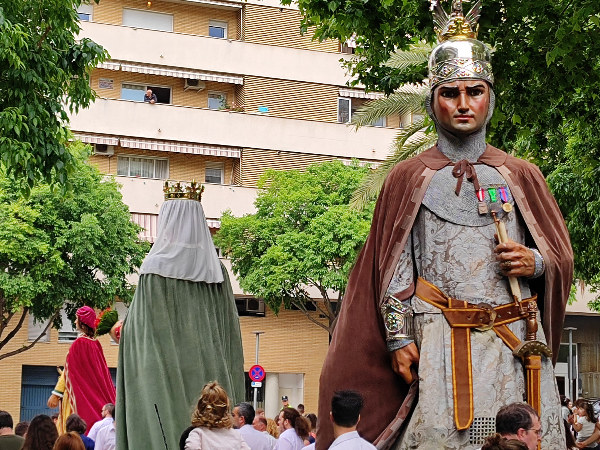
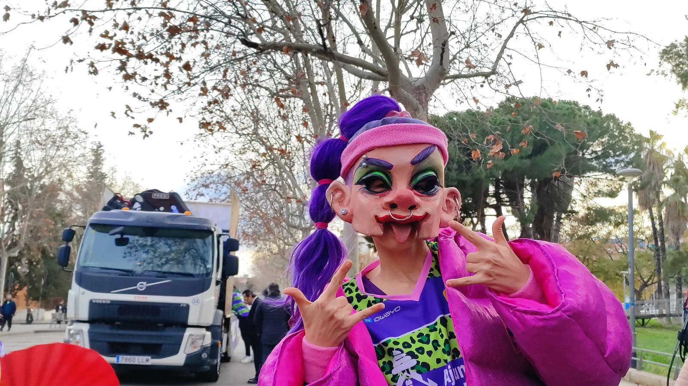
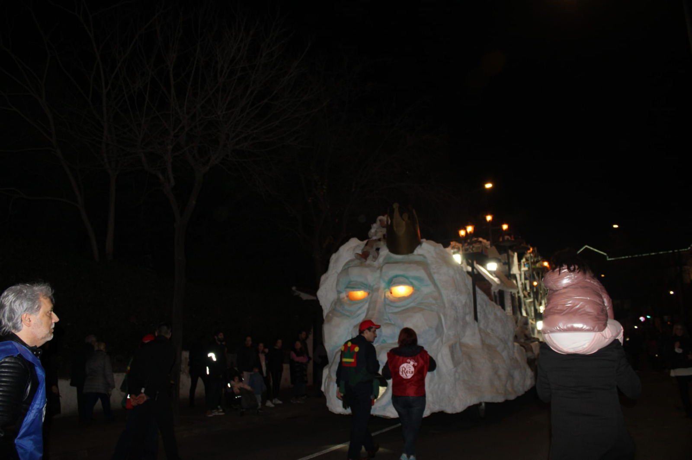
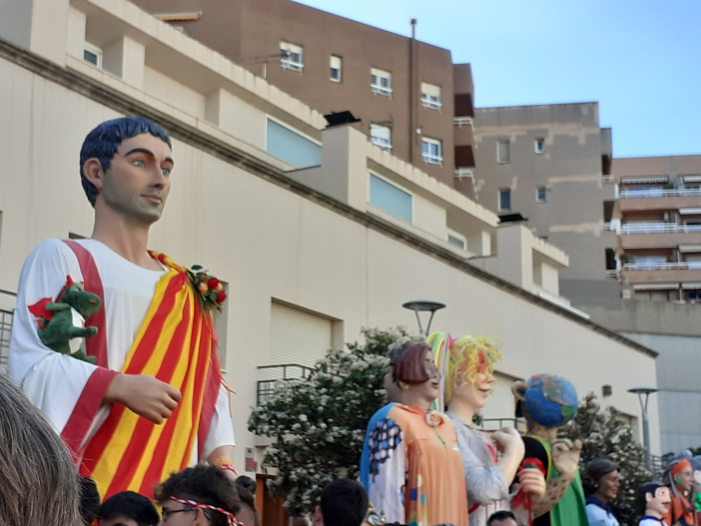
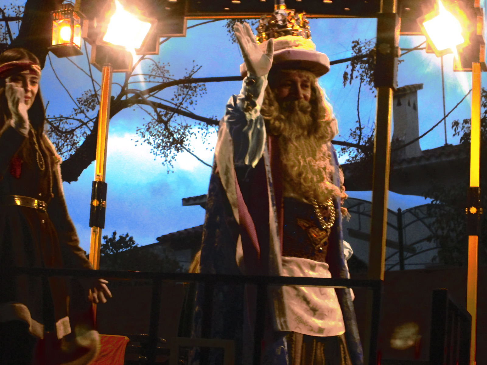

TEIXINT
TRADICIONS
Publicat per Tradicions de Mataró
Un projecte independent
nascut a Mataró
Tradicions de Mataró és un projecte de divulgació cultural nascut a la ciutat de Mataró, impulsat per persones compromeses amb la cultura popular i el patrimoni local.
Som un mitjà digital independent i sense ànim de lucre que aposta per la difusió de la cultura mataronina a través de reportatges audiovisuals, entrevistes, cròniques i continguts informatius de qualitat.
Tradicions de Mataró no vol ser només un espai informatiu, sinó també un punt de trobada per a totes aquelles persones que estimen la cultura local i volen contribuir a mantenir-la viva, alhora que la projectem cap al futur.




La nostra trajectòria
El projecte es va iniciar el 19 de setembre de 2015 i, des d'aleshores, ha anat creixent tant en continguts com en equip humà.
Al llarg dels anys hem realitzat reportatges sobre actes culturals, entrevistes amb protagonistes de la vida cultural de la ciutat i cobertures especials de festes i tradicions emblemàtiques com Les Santes, el Carnestoltes o altres celebracions singulars de la ciutat.
Cada projecte, cada vídeo i cada article reflecteix el nostre compromís amb la qualitat i la veracitat de la informació, així com amb la preservació de la memòria col·lectiva de Mataró.
Veure infografia del blog →La cultura en moviment
Documentals, cobertures en directe i reportatges sobre les tradicions de Mataró.
🎥 Preservar, difondre i compartir
la cultura popular i festiva de la nostra ciutat
El que opinen de nosaltres
Nou anys de missatges, comentaris i mostres de suport de la gent de Mataró.
🌱 El que ens defineix
📌 Projectes destacats
Creant futur
Actualment, Tradicions de Mataró continua evolucionant i adaptant-se als nous formats i canals de comunicació. Apostem per la innovació, la qualitat audiovisual i la creativitat, explorant noves maneres d'arribar a la ciutadania.
El nostre objectiu és seguir sent un referent en la difusió de la cultura mataronina, consolidant Tradicions de Mataró com un espai viu, participatiu i inspirador, que connecti passat i futur, tradició i modernitat.
Tradicions de Mataró: teixint tradicions, creant futur.
Descobreix el nostre flyer →
Nova marca · Nova etapa